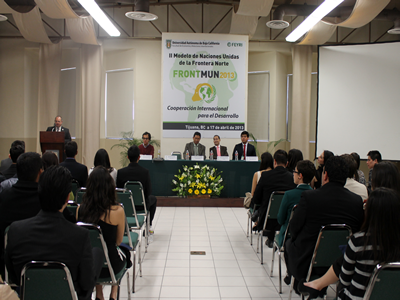
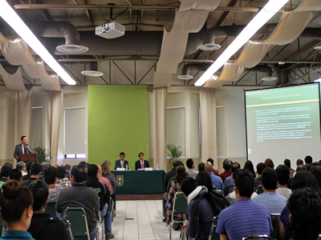
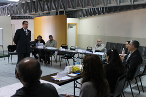

Conoce nuestra sede
Teatro Universitario Rubén Vizcaíno Valencia
Inmueble construido ex profeso, localizado dentro de las instalaciones de la Universidad Autónoma de Baja California, (UABC), campus Tijuana. Creado en 1976, alfombrado, cerrado, tiene aforo para 426 personas, cuenta con butacas fijas y numeradas. En diciembre de 1998 se le dio el nombre actual. La primera representación fue El cuadrante de la Soledad, de José Revueltas, por alumnos de turismo, economía y contaduría, dirigidos por Paúl Paredes y escenografía de Cátaro Núñez. Fue declarado recinto oficial por decreto de la H. XV Legislatura Constitucional del Estado Libre y Soberano de Baja California, llevándose a cabo la sesión correspondiente al 29 de mayo de 1997.
Es sede del Festival Universitario de Teatro y fue sede alternativa de la XXV Muestra Nacional de Teatro. Se utiliza para presentaciones de fin de cursos, actos académicos y congresos del alumnado, así como conferencias e informes de gobierno para la comunidad en general.

Sala de lectura
  Audio Visuales